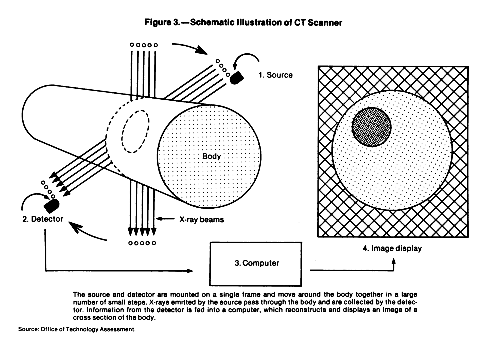

Introduction
You already know that a conventional X-ray creates an image by passing X-rays through the body and recording the radiation that reaches the detector.
But there is one important limitation: a conventional X-ray gives us a view of the body from a particular direction.
Because the body contains many structures at different depths, these structures can overlap on the same image.
For example, on a chest X-ray, the heart, ribs, blood vessels, lungs, and other structures are all represented in one projection.
What is a projection?
In simple words, a projection is an image or set of X-ray measurements obtained from one direction through the body.
Imagine placing your hand in front of a light. You see its shadow on the wall. The shadow gives you a 2D representation of your hand from that particular direction.
A conventional X-ray works on a much more complex version of this idea. X-rays pass through the body, and the detector records the X-ray pattern that comes through.
But one projection cannot tell us everything about where structures are located inside the body.
This is where CT becomes different.
How Is CT Different?
Instead of collecting information from only one direction, CT collects many X-ray measurements from different directions around the patient.
The X-ray tube rotates around the patient while detectors measure the X-rays that pass through the body.
A computer then combines these measurements and reconstructs them into a cross-sectional image, often called a CT slice.
Conventional X-ray
One direction → projection image
CT
Many directions → many measurements → computer reconstruction → cross-sectional image
This is the basic idea behind CT.
Now let's follow the process step by step.

1. The Main Parts of a CT Scanner
Before understanding how the image is created, let's look at the main components involved.
X-ray tube
The X-ray tube produces the X-rays used to scan the patient.
Detectors
The detectors are positioned opposite the X-ray tube. They measure the X-rays that reach them after passing through the patient's body.
Gantry
The gantry is the large circular part of the CT scanner.
It contains the X-ray tube and detector system and allows them to rotate around the patient.
Patient table
The table moves the patient through the opening of the gantry.
Computer
The computer receives the measurements collected by the detectors and uses mathematical reconstruction methods to create the CT images.
So, in very simple terms:
X-ray tube → produces X-rays
Patient → changes the X-ray beam
Detectors → measure what comes through
Computer → reconstructs the image
In modern CT systems, the X-ray source and detector assembly rotate around the patient while measurements are collected from many angles.
2. X-rays Pass Through the Patient
Now let's follow what happens when the scan begins.
The X-ray tube produces an X-ray beam that passes through the patient's body.
As the X-rays travel through the body, they interact with different tissues.
Some X-rays are absorbed or scattered, while others continue through the body and reach the detectors.
The reduction in the intensity of the X-ray beam as it passes through the body is called attenuation.
What does attenuation mean?
Think about shining a flashlight through different materials.
If you shine it through a thin curtain, a lot of light may pass through.
If you shine it through a thick book, much less light will come through.
Different materials affect how much light reaches the other side.
CT uses X-rays rather than visible light, but the basic idea is similar:
For example:
- Air attenuates X-rays very little.
- Soft tissues attenuate X-rays to varying degrees.
- Bone attenuates X-rays much more strongly than most soft tissues.
The detectors measure the X-rays that remain after passing through the body.
These measurements provide information about the tissues along the X-ray path.
3. Why Does the X-ray Tube Rotate?
This is one of the most important ideas in CT.
A conventional X-ray usually gives us information from a particular direction.
But the human body is three-dimensional.
If we want more information about where structures are located inside the body, we need measurements from different directions.
That is why the X-ray tube and detector system rotate around the patient.
A simple example
Imagine you have a closed box containing several objects.
If you could only look at the box from the front, some objects might be hidden behind others.
Now imagine looking at the box from many different directions.
You would collect much more information about the objects inside.
CT works on a similar principle.
The scanner collects X-ray measurements while rotating around the patient.
The measurements from all these different directions are later used by the computer to reconstruct the image.
4. What Is a Projection in CT?
Now that we understand why the scanner uses different directions, the word projection becomes easier.
A projection is basically a set of X-ray measurements collected from one particular direction.
For example, imagine the scanner collecting measurements while the X-ray beam passes through the body from one angle.
That gives one set of information.
As the tube rotates to another angle, another set of measurements is collected.
The scanner continues this process around the patient.
One direction → one projection
Many directions → many projections
The computer uses all of these projections together to reconstruct the cross-sectional image.
5. What Do the Detectors Actually Measure?
The detectors do not directly produce a ready-made picture of the patient's organs.
Instead, they measure how much X-ray radiation reaches them after the beam has passed through the body.
Imagine two X-ray beams travelling through different paths.
One path may pass mainly through air.
Another may pass through bone and soft tissue.
The amount of X-ray radiation reaching the detector will be different because the tissues along those paths attenuate the X-rays differently.
The detector records these differences.
During the rotation, the scanner collects a very large number of measurements from different angles.
These measurements are the information that the computer needs for reconstruction.
Modern CT scanners use multiple rows of detectors, allowing data from several sections of the body to be acquired during a rotation.
6. How Does the Computer Turn These Measurements Into an Image?
This is the step that gives CT its name: Computed Tomography.
The detectors have collected measurements, but those measurements are not yet a normal-looking CT image.
So how does the computer know what is inside the body?
It uses a mathematical process called image reconstruction.
Think of it like solving a puzzle
Imagine you have many pieces of information about an object, but you cannot see the complete object directly.
Each piece tells you something useful.
When all the information is combined, you can work out what the complete object looks like.
CT reconstruction works on a similar idea, although the actual mathematics is much more complex.
The scanner collects measurements from many directions.
The reconstruction algorithm processes these measurements and calculates the distribution of X-ray attenuation within the scanned region.
The result is a cross-sectional CT image.
The basic process
X-rays pass through the body
↓
Detectors measure the radiation
↓
Measurements are collected from many directions
↓
Computer processes the measurements
↓
Reconstruction algorithm creates the CT image
7. What Is Image Reconstruction?
Image reconstruction is the mathematical process of converting the measurements collected by the CT scanner into an image representing the internal structures of the scanned region.
Different reconstruction methods can be used.
Filtered Back Projection
One traditional method is Filtered Back Projection (FBP).
In simplified terms, information from the different projections is mathematically processed and then used to build the image.
The "back projection" part means that information from each projection is mathematically distributed back across the image area.
However, simple back projection by itself would produce a blurred image.
A filtering step is therefore applied before the back-projection process to improve the image.
That is why it is called filtered back projection.
Iterative Reconstruction
Modern CT scanners can also use iterative reconstruction (IR) techniques.
Instead of producing the final image in one direct calculation, these methods repeatedly compare an estimated image with the measured data and make corrections.
A very simplified way to remember it is:
Different iterative reconstruction methods work differently, but they can reduce image noise and help maintain image quality, particularly in lower-dose CT examinations.
For a beginner, the most important thing to remember is:
8. How Does the Reconstructed Image Show Different Tissues?
After reconstruction, the image contains numerical information related to how strongly the tissues attenuated the X-rays.
These differences are displayed as different shades of gray.
Generally:
Lower attenuation → darker appearance
Higher attenuation → brighter appearance
This is why:
- Air appears very dark.
- Fat is relatively dark.
- Soft tissues appear in different shades of gray.
- Bone generally appears bright.
CT can also represent attenuation numerically using Hounsfield Units (HU).
For example:
- Air ≈ −1000 HU
- Water = 0 HU
- Dense bone = usually several hundred HU or more
These are approximate reference values, and actual measurements can vary.
You don't need to memorize these values to understand how CT creates an image. The important point is that different tissues produce different attenuation measurements, and these differences help the computer create the image.
9. How Does One CT Slice Represent the Body?
A reconstructed CT image represents a cross-section through the body.
This is similar to cutting a loaf of bread into slices.
If you look at one slice of the loaf, you see only the structures present in that particular section.
A CT slice works in a similar way.
Instead of seeing all the structures of the body projected onto one image, we can examine a particular section.
This reduces the overlap that is common in conventional projection radiography.
10. How Does CT Create Many Slices?
A CT examination usually produces a series of images, not just one slice.
The scanner collects data through a region of the body, and the computer can reconstruct images at different positions along that region.
In helical (spiral) CT, the patient table moves continuously through the gantry while the X-ray tube rotates.
This allows data to be acquired along a spiral path around the patient.
Modern multidetector CT scanners have multiple rows of detectors, allowing a larger volume of anatomy to be acquired efficiently.
Think of a loaf of bread again
One slice tells you about one section of the loaf.
Many slices placed together represent the whole loaf.
Similarly:
One CT slice → one cross-sectional view
Many CT slices → a volume of the scanned body region
The collection of CT data therefore gives us much more information than a single projection image.
11. From CT Slices to a 3D Dataset
Because CT collects information through a volume of the body, the resulting data can be treated as a 3D dataset.
This means the same acquired data can be used to create images in different orientations.
For example, CT data can be reconstructed or reformatted into:
- Axial images — horizontal sections
- Coronal images — front-to-back sections
- Sagittal images — side-to-side sections
This process is called multiplanar reconstruction (MPR).
The important idea is that these different views come from the same CT dataset. The patient does not need to be scanned separately for each plane.
Putting Everything Together
Let's follow one CT examination from beginning to end.
Step 1 — X-rays are produced
The X-ray tube produces an X-ray beam.
Step 2 — X-rays pass through the body
The tissues attenuate the X-rays by different amounts.
Step 3 — The tube rotates
The X-ray tube and detector system rotate around the patient.
Step 4 — Detectors measure the transmitted X-rays
The detectors record how much radiation reaches them.
Step 5 — Measurements are collected from many directions
Each direction provides another set of measurements, or projection data.
Step 6 — The computer receives the data
The measurements are sent to the computer for processing.
Step 7 — Reconstruction takes place
A reconstruction algorithm uses the projection data to calculate the internal distribution of X-ray attenuation.
Step 8 — A cross-sectional image is produced
The result is a CT slice showing a section through the body.
Step 9 — More images are reconstructed
Additional sections can be reconstructed to create a volumetric dataset.
Step 10 — The dataset can be viewed in different ways
The data can be displayed as axial, coronal, sagittal, or other reconstructed images and can also be used for appropriate 3D visualization.
The Whole Process in One Simple Diagram
X-ray tube produces X-rays
↓
X-rays pass through the patient
↓
Different tissues attenuate X-rays differently
↓
Detectors measure the X-rays that come through
↓
Tube and detectors rotate around the patient
↓
Measurements are collected from many directions
↓
Computer processes the projection data
↓
Reconstruction algorithm creates the image
↓
Cross-sectional CT slice
↓
Multiple slices → volumetric CT dataset
Why Can't a Conventional X-ray Do the Same Thing?
This is an important question.
A conventional X-ray also sends X-rays through the body.
So why does it not normally produce a CT slice?
The main difference is how the information is collected and processed.
A conventional radiograph records a projection of the body from a particular direction.
CT collects many measurements around the patient and uses mathematical reconstruction to determine the distribution of X-ray attenuation within a cross-section.
| Imaging method | How information is collected | Final result |
|---|---|---|
| Conventional radiography | X-rays recorded from a particular direction | Projection image |
| CT | Many X-ray measurements collected from different angles | Computer-reconstructed cross-sectional images |
So the difference is not simply:
X-ray = X-rays
CT = more X-rays
Both use X-rays.
The important difference is:
Conventional radiography → projection image
CT → many measurements from different angles + computer reconstruction → cross-sectional image
A Simple Example to Remember CT
Imagine you have a sealed box containing several objects.
If you look at the box from only one side, some objects may overlap and hide each other.
Now imagine that you could collect information about the box from many different directions.
Each direction gives you additional information.
If you combine all of that information using a mathematical method, you can work out where the objects are located inside the box.
CT works on a similar principle.
It does not directly "photograph" the inside of the body.
Key Takeaway
CT creates cross-sectional images by combining X-ray measurements from many different directions with computer-based image reconstruction.
The X-ray tube rotates around the patient while detectors measure the radiation that passes through the body.
Because different tissues attenuate X-rays differently, the measurements collected at different angles contain information about the structures inside the body.
The computer then uses reconstruction algorithms to combine this information and create a cross-sectional image.
Multiple reconstructed sections can be combined into a volumetric dataset that can also be viewed in different planes.
In one line:
Many X-ray measurements from different directions + computer reconstruction = cross-sectional CT images.
Sources & Further Reading
-
U.S. Food and Drug Administration (FDA)
—
Computed Tomography (CT)
Useful for understanding the basic CT system, rotating X-ray source and detectors, projection measurements, and reconstruction of cross-sectional slices. -
U.S. Food and Drug Administration (FDA)
—
Medical X-ray Imaging
Explains the basic difference between conventional radiography and CT, including the use of multiple X-ray measurements and computer reconstruction. -
Stiller W. —
Basics of iterative reconstruction methods in computed tomography:
A vendor-independent overview.
European Journal of Radiology.
Useful background on CT image reconstruction and iterative reconstruction methods.
PubMed -
Koetzier LR, et al. —
Deep Learning Image Reconstruction for CT: Technical Principles
and Clinical Prospects.
Radiology.
Provides background on CT reconstruction methods including filtered back projection, iterative reconstruction, and newer deep-learning approaches.
PubMed